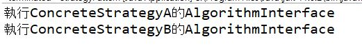

策略模式
Strategy Pattern

定義演算法家族，個別封裝起來，讓它們之間可以交互替換，此模式讓演算的變動，不會影響到使用演算法的程式
UML概念

實作策略模式
public class StrategyPattern { public static void main(String[] args) { StrategyContext strategyContext =new StrategyContext(); strategyContext.setStrategy(new ConcreteStrategyA()); strategyContext.ContextInterface(); strategyContext.setStrategy(new ConcreteStrategyB()); strategyContext.ContextInterface(); } } abstract class Strategy{ public abstract void AlgorithmInterface(); } class ConcreteStrategyA extends Strategy{ @Override public void AlgorithmInterface() { System.out.println("執行ConcreteStrategyA的AlgorithmInterface"); } } class ConcreteStrategyB extends Strategy{ @Override public void AlgorithmInterface() { System.out.println("執行ConcreteStrategyB的AlgorithmInterface"); } } class StrategyContext { private Strategy strategy ; public void setStrategy(Strategy strategy) { this.strategy =strategy; } public void ContextInterface() { strategy.AlgorithmInterface(); } }
輸出

利用不同物件設定Context物件，讓Context物件去執行各種演算法得出不同結果
Java上實際應用舉例：Servlet的策略模式和樣板方法模式
UML概念

實作示意
import java.io.*; import javax.servlet.*; import javax.servlet.http.*; public class HelloWorldServlet extends HttpServlet { public void doGet(HttpServletRequest req, HttpServletResponse res) throws ServletException, IOException { } public void doPost(HttpServletRequest req, HttpServletResponse res) throws ServletException, IOException { } }
HttpServlet 透過繼承GenericServlet實現Servlet介面，servlet開發者可以重寫doGet,doPost對應Http請求的類型方法